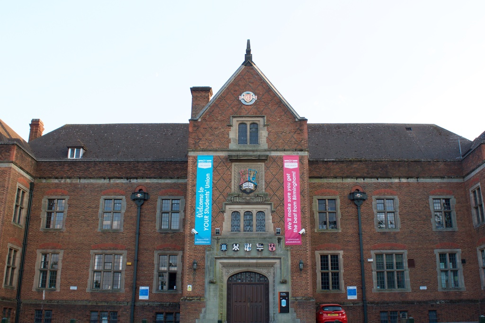
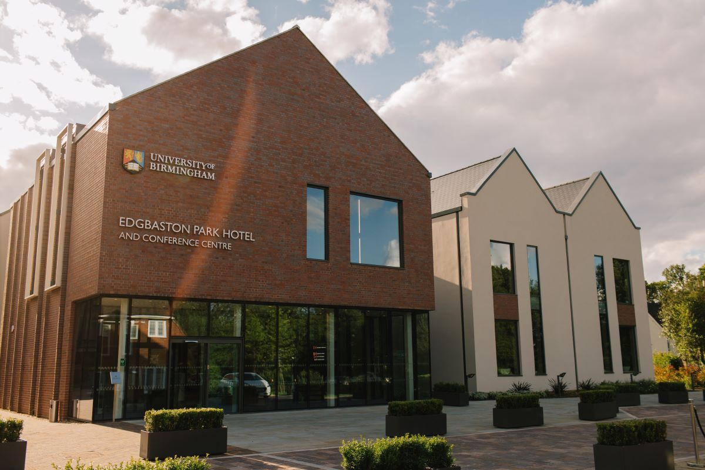
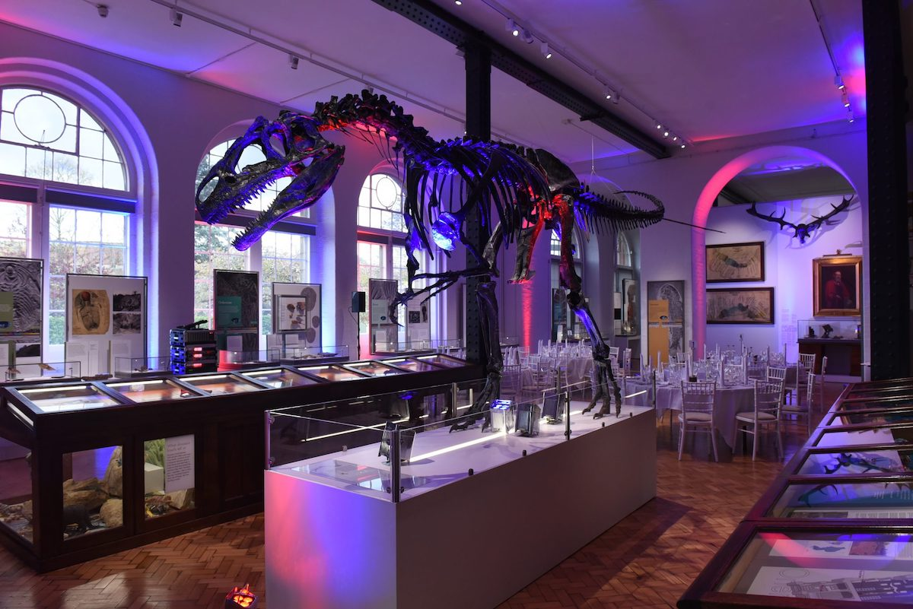
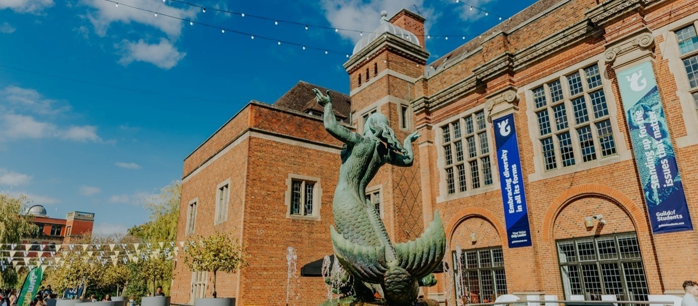
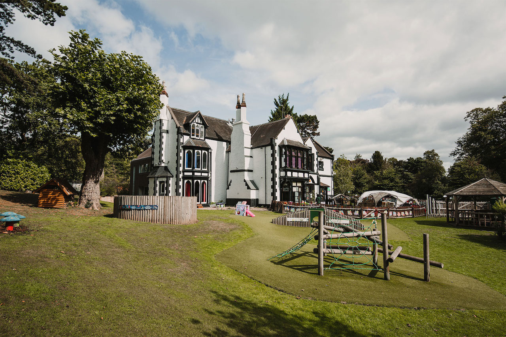

Practical Information
If you have any question, please contact the conference email.
- How to get here.
- Venue information.
- Accommodation.
- Social activities.
- Conference costs.
- Childcare options.
- Financial help.
How to get here
We recommend people to travel by train. The campus has its own station (black building on the left hand side of the campus map). The station is called "University", and has the code "UNI" on National Rail Enquiries, and other ticketing services. The station has frequent train services from New Street Station, which is Birmingham's main rail station, and the University station has direct connections to the south-west of England and South Wales. We encourage everyone to take the train and limit their carbon emissions. Most of Britain is reachable in less than 5 hours by train from Birmingham.
Those arriving by plane can land at Birmingham International Airport. From there take the monorail to the airport's train station and connect to the University campus after changing trains in New Street Station.
Finally, car travel is another option, however car parking on or near campus is not the easiest. We recommend you arrive using public transportation. There is one visitor carpark along Pritchatts Road (indicated on the map above). Those staying at the hotel can also use the hotel's car park.
Additional travel information can be found on this link.
On the map, green is the shortest path. In pink are the wheelchair accessible paths.

Venue Information
The conference will take place in the the Guild of Students (pictured above), which is located along Edgbaston Park road (labelled O1 on the campus map). The venue is wheel-chair accessible.
The talks will take place in the Debating Hall on the first floor. Enter via the main entrance (pictured above) and climb the stairs. The posters will be displayed in a specific room leading to a terrace, in the back of the building. Food will be served there as well for lunches and one of the evenings.
The post-conference strategy meeting will take place at the Edgbaston Park Hotel , on the morning of Friday 12 (G23 on the map).

Accommodation
We recommend sleeping on campus, since much of the social events will happen here and everything is within walking distance from the two hotels on campus: Edgbaston Park Hotel, and Peter Scott House. They are located in the green buildings G23 and G17 respectively, on the campus map. We have secured a competitive rate for the first 50 participants, at a cost of £92/night for Edgbaston Park Hotel, and 34 rooms at £71/night at Peter Scott House, including breakfast, instead of £156. Please, make good use of this hard-won offer.Note that only the night of 9 and 10 April are at a reduced rate. Should you need other nights, please book separately at the same or another hotel.
To benefit from the offer, register via the University's online shop. First come, first served basis.

Social activities
Tuesday evening: Hot dinner buffet (included with registration) in the poster room (and terrace).
Wednesday evening: Conference dinner in the Edgbaston Park Hotel (G23) (150 tickets to purchase). Download the menu here (including allergens).
Thursday afternoon: 4-5pm, we encourage you to visit the Lapworth Museum of Geology (Enter via the back of R4 on the map).

Conference costs
Up to 25 February 2024: Registration is £120
From 26 February 2024: Registration is £140
Registration includes lunches on all three days, as well as Tuesday's dinner. These costs are subject to revision prior to the registration opening.
Conference dinner: £55. This includes a three course meal in the Edgbaston Park hotel (G23). Check the menu (and dietary information).

Childcare options
There are three nurseries on campus who have indicated they might be able to open their doors to participants' children during the conference (The Elms, the Oaks and the Maples). However, this not guaranteed at this stage. The nurseries have informed us that delegates need to contact them to secure places. The Maples might already be in the possible to give availability. Generally speaking, two weeks ahead, the nurseries will might also have new availabilities. The nurseries generally accept children between the ages of 6 weeks and 5 years, but there are less availabilities between 3 and 5 years of age. All three nurseries are open in two sessions: 07:30 - 12:30 and 13:00 - 17:55. Children can be dropped off and picked-up at any time during a session. The cost is £36 for one session, and £68.50 for the full day.
Please indicate your need for childcare in your registration form, particularly for older kids, and we will try to see what can be arranged.
Financial help.
We do not plan to provide any financial support at this stage. If we raise external funds, we will attempt to distribute these by refunding some of the early bird registration, privileging students, and those requiring childcare.